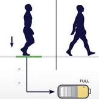

Le projet Selfo a deux pièces principales.
La porte ci dessous, maintenue par un poteau et fonctionnant en autonomie grace aux dalles produisant de l'energie.
Voici donc le design de ce premier système, fait par les élèves du groupe.
Le projet Selfo a deux pièces principales.
La dalle ci dessous, sera installée dans la file d'attente menant au Selfo .
Cette dalle sert à produire de l'électricité grace à son design et à la maniere dont elle est construite.
Voici donc le design de ce second système, fait par les élèves du groupe.
Le système de piezo electricité est celui qu'on a choisi afin de produire de l'energie.
Lorsqu'on marche sur la dalle celle-ci se baisse grâce à son design et entraine une réaction dans le système piezoelectrique .
La piezoelectricité servira donc à alimenter une batterie afin de pouvoir bénéficier du stockage et donc de l'autonomie.
